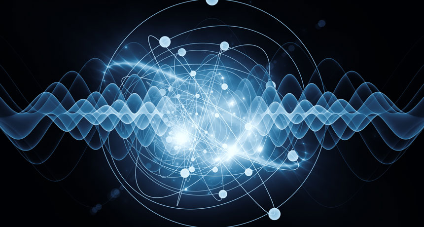
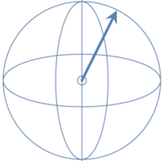

Quantum Computing Primer

Quantum computing is coming, in fact it’s on our doorstep.
But there’s a problem: a lack of quantum software engineers. There is a reason for this. At the moment much of the literature is either popular science, so watered down to be useless for practical purposes, or, at the other extreme, written by academics for academics making it tough going for many programmers to follow.
Nonetheless software engineers are exactly what the field needs because we build abstractions and abstractions are sorely missing. Quantum computing needs YOU to build new constructs that academia hasn’t even thought of yet. This article introduces the general concepts behind quantum computing which hopefully any programmer new to quantum computing can understand.
A Bit of History
It shouldn’t be necessary to explain to programmers what a bit is. It’s a concept so fundamental to computing that it’s taken almost for granted in modern day programming.
We often forget that in the earliest computers each bit of information required a clunky, power-hungry, sausage-sized vacuum tube. Programming in those days was low-level bit twiddling and was inherently error-prone. In time vacuum tubes were replaced by individual transistors which were gradually miniaturised and packed more and more tightly into the integrated circuits which are the processors of today’s laptops and smartphones.
Today’s quantum computers are clunky, power-hungry and error-prone, like the vacuum tubes in their day. Programming them is basically low-level bit twiddling and they operation is inherently error prone. Do not be fooled into thinking that quantum computing is a step backwards, however, in fact we’ll see that the strange consequences of quantum mechanics can be harnessed to bring immense benefits and even tiny quantum systems can produce results that traditional computing cannot. The computational power that they will represent in the coming years is unimaginable.
What’s a Bit Anyway?
A bit represents a binary piece of information, the answer to a yes/no question. We are used to seeing binary information represented with other symbols too: yes/no, 1/0, true/false or maybe even on/off. We’ll call the possible values states, that is, an “on” state or a “true” state, etc.
Binary data can also be be represented geometrically, for example as an arrow pointing up for one binary state and an arrow pointing down for the other, like the hour hand of a clock at 12pm and 6pm.
With this in mind we can interpret the familiar NOT operator or gate as simply flipping the arrow through 180º, from the Up state to the Down state and vice versa1. The NOT gate, then, is an example of a unitary operation on the bit, that is to say, it changes the direction of the arrow but not its length. In fact in the classical world there are only two one-bit operations, the other being the identity operator which leaves the bit in its previous state and obviously doesn’t affect the length of the arrow either.
1 The Up and Down terminology is also reminiscent of one of the quantum mechanical properties of particles called spin.
Extending the Notion of a Bit to the Quantum World
Now take a moment to imagine that the arrow is not confined to just the Up and Down states, as it is in the classical world, but can point in any direction, up, down, left, right, front and back. The arrow is evidently not restricted to just two mutually exclusive binary states, as in the case of the classical bit, but rather any point over the whole surface of a sphere2.
2 This sphere is known as the Bloch sphere.

You’ve just imagined the possible states of a quantum bit, or qubit as it is usually called.
As an analogy, take the surface of the earth with the north and south poles representing the Up and Down directions. Every location on the surface of the earth would represent a different state, given, for example, by its GPS coordinates.
Now we can imagine a whole new family of gates which not only flip the arrow around 180º (like the classical NOT gate) but can rotate it by different angles into any direction3.
3 In the quantum computing literature these gates have (cryptic) names like H, X, Y and Z. In reality they are all nothing more than rotations of the arrow in different directions by different amounts.
God does play dice
In the strange world of quantum mechanics, when we make observations, those same observations affect the state of the system. In this case, when we measure a qubit it will always appear to be straight Up or straight Down, never anything in-between. It is said that the state collapses to one of these values4. What’s more, the probability that it will collapse to one state or another is related directly to how close it is to that state, i.e. how close to the poles.
4 This is known as the measurement problem because no one really knows for certain why or how this happens. There is evidence that when considering the measuring equipment as a quantum mechanical system in itself then the collapse can be considered as altering the state on the whole system to bring both into alignment. Einstein famously was not convinced.
For example, if we identify the Up state as false and the Down state as true then if the arrow of our quantum bit is pointing vertically up then it will almost certainly be false when measured. On the other hand if it’s pointing down then it’s almost certain to be measured as true. If it’s pointing sideways then it could result in either true or false with equal likelihood. It is indeterministic, in other words random. God really does play dice.
Believe it or not this view of a qubit has been validated by experiment time and again. Specially prepared light particles, sub-atomic particles and even atoms behave in exactly this way. It leads to some very useful results in its own right, like true random number generation, but the real power doesn’t come until we combine multiple bits into a single state.
Combining Two Qubits
We know how to combine classical bits, it’s just the binary number system that we use everyday. For example, the combination of 2 bits have exactly 4 possible states, namely 00, 01, 10 and 11. Notice that although each bit exists separately, to have meaning they need to be considered together, as a single register, in a given combined state.
In a similar way quantum bits can be combined into quantum registers and, just as we saw that a quantum bit can be considered a mix or superposition of Up and Down states, so can the quantum registers be considered a superposition of their possible states, although unfortunately there is no easy way to intuitively visualise them as there is with the Bloch sphere of a single quantum bit.
In other words, the quantum register is some weighted superposition of Up-Up plus Up-Down plus Down-Up plus Down-Down. The weights of the components define the combined state, just as it did in the single qubit case.
Entanglement
When measured, a 2-bit quantum register will collapse to just one of 4 possible states, just as in the classical case.
There is something truly remarkable about quantum registers and it is this: the number of possible states for the register before measurement is greater than the number of states that could be produced from two single quantum bits working separately.
Let that sink in.
Two linked, or entangled, quantum bits forming a 2-bit quantum register can be in a state which is not a combination of individual qubits! What’s more, the measurement of one qubit affects both qubits, even if they are separated by great distances.
Einstein called this “spooky action at a distance” and the physical mechanisms behind it are still a mystery5. Nonetheless it has been shown and confirmed by many experiments to be true. It is one of the remarkable facts that gives quantum computing its immense power and set it apart from classical computing.
5 See this video for an esoteric attempt to explain of this phenomenon.
Quantum computers are not reliable
As programmers we’re no longer accustomed to dealing with bit errors. Under the covers, however, errors are common in data storage and transmission but reliability is achieved through built-in detection and recovery mechanisms which solve this problem for us. These mechanisms usually by work by adding redundancy to the data itself and this redundancy is also required in quantum computing meaning that they can never reach their theoretical maximum capacity.
The current state of the art in quantum computing is very far from the reliability of traditional computing. The error rates are such that results must be assumed to be wrong some of the time.
Summary
We have seen how to extend a classical bit to the quantum world. We have also seen how these bits differ from their classical counterparts:
- Quantum bits (qubits) have a whole continuum of states, not just the binary states of a classical bit.
- Even though qubits have a continuum of possible states, when observed or measured, they collapse, permanently, to one of the classical binary states.
- Qubits can be combined into registers and these registers have more possible states than the combinations of the individual qubits. This means when one qubit is measured and collapses to a particular binary state then the other qubits in the register must also change, even if separated by enormous distances. This effect is known as entanglement.
This area of computing is in its infancy and basic things that we take for granted must be reevaluated. On the other hand these properties taken together give us access to a powerful new programming paradigm. This introduction is just the very beginning. Nonetheless to get a deeper understanding of what’s happening in order to be able to do anything useful requires understanding the maths involved but I encourage you to do so. Quantum computing needs you!
Online Resources
If you would like to know more I can recommend the following online resources:
Michael Nielson’s YouTube course - Quantum Computing for the Determined
Microsoft’s Q# - What is Quantum Computing?
Craig Gidney’s Quirk online quantum circuit simulator and blog.